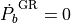
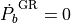
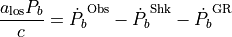

alos_obs¶
- peebee.convenience.alos_obs(*args, frame='gal')¶
Compute
 , the line-of-sight acceleration of a pulsar given its observed properties.
Automatically determines whether to use GR if the number of inputs is 6 (no GR) or 9 (with GR).
is computed as
where  is assumed if mp, mc, and e are not provided.
, the line-of-sight acceleration of a pulsar given its observed properties.
Automatically determines whether to use GR if the number of inputs is 6 (no GR) or 9 (with GR).
is computed as
where  is assumed if mp, mc, and e are not provided.
- Coord1-3:
Galactocentric Cartesian coordinates (kpc) or Galactic longitude, latitude (deg) and heliocentric distance (kpc). Toggle between these options with the ‘frame’ flag.
- Pb:
binary orbital period of the pulsar (s)
- Pbdot_obs:
the observed time derivative of the binary orbital period (s/s)
- Mu:
the observed proper motion (mas/yr)
- Mp:
(optional) the mass of the pulsar (M)
- Mc:
(optional) the mass of the companion (M)
- E:
(optional) orbital eccentricity of the binary
- Frame:
[default value = ‘gal’] Toggle the input frame. Options are ‘cart’ for Galactocentric Cartesian (X,Y,Z), ‘gal’ for heliocentric Galactic coordinates (l,b,d), ‘icrs’ for equatorial coordinates (ra, dec, d), and ‘ecl’ for ecliptic coordinates (lam, bet, d)